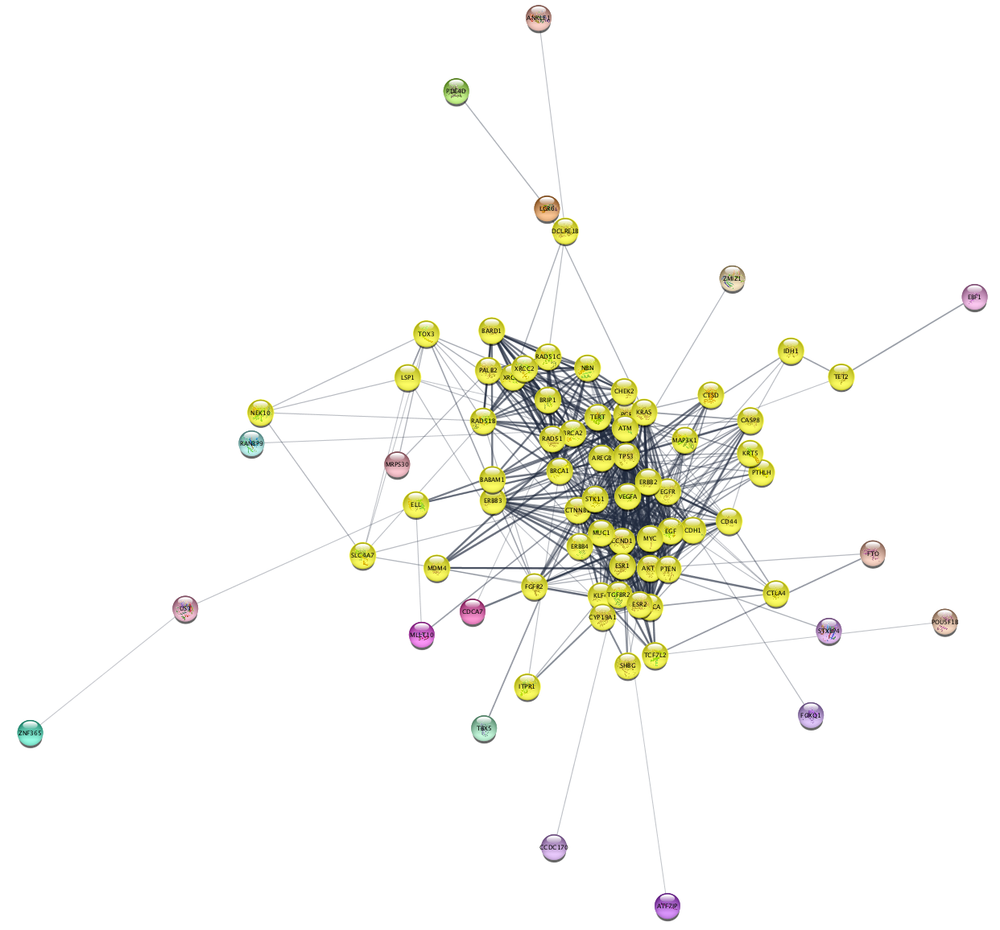

Filtering by Selection
This tutorial will introduce you to some techniques for filtering a network by selection. You will learn to:
- Select a set of nodes based on node degree and attribute
- Create a subnetwork based on selected nodes
For this tutorial, we will use data from the STRING database.

Loading network data
- Launch Cytoscape and if the stringApp is not installed, install it from the App Store.
- In the
Network Search tool at the top of theNetwork tab in theControl Panel , selectSTRING disease query from the drop-down. - Type in "breast cancer" and click
Enter to search.

Selecting nodes based on degree
Every node in a network has a Degree property, which corresponds to the number of edges connecting the node to other nodes, either as a target or source. Filtering based on node degree is a useful way to remove nodes with too few or too many connections.
- Click on the
Select tab of theControl Panel . - Click on the drop-down to the right and select
Create New Filter . Enter a name for your filter, for example "node degree". - Click the
+ (add) button and selectDegree Filter . - Leave the default selections for the two drop-downs (In + Out and in), and adjust the slider to include nodes with degree between 3 and 50. This will select all nodes with degree 3 or more.
The filter will be automatically applied. At the bottom of the Select tab, you can see how many edges/nodes where selected. A set of nodes have been selected in your network, highlighted in yellow:
Creating a subnetwork from a selection
We can now create a new network, or subnetwork, from our selected set of nodes.
- With the nodes still selected, go to
File → New Network → From Selected Nodes, All Edges . - The new network will look similar to this:

Selecting nodes based on attributes
To further filter the network, we can prune out nodes with low disease score. The disease score comes from STRING and indicates the strength of the association to the disease queried.
- Click on the
Select tab of theControl Panel . - Click on the drop-down to the right and select
Create New Filter . Enter a name for your filter, for example "disease score". - Click the
+ (add) button and selectColumn Filter . In theChoose column... drop-down, selectNode: disease score . - In the selection slider, select scores between 4 and 5.
- Again, select
File → New Network → From Selected Nodes, All Edges.
The final network contains much fewer nodes, but they are the most connected and those most highly associated with disease. If you examine the network you can see several well-known breast cancer oncogenes, for example BRCA1 and PTEN.

Combining filters
But what if we want to combine these two filters? You could apply them sequentially as individual filters, but then you'd need to be careful about the order in which you apply the filters. Alternatively, you can create a composite filter and apply the logic all at once.
Let's combine the two filters "degree filter" and "disease score" to produce one filter, then apply it to the original network to create a final subnetwork:
- In the
Network tab, select the original network from STRING. - In the
Style tab, select the "node degree" filter from the drop-down. - To add a second filter, click the plus-sign and recreate the "disease score" filter.
- Note that the drop-down at the top is set for Match all (AND) by default, which is what we want in this case.
- Now create a new network from the selection, representing the same final network as earlier.